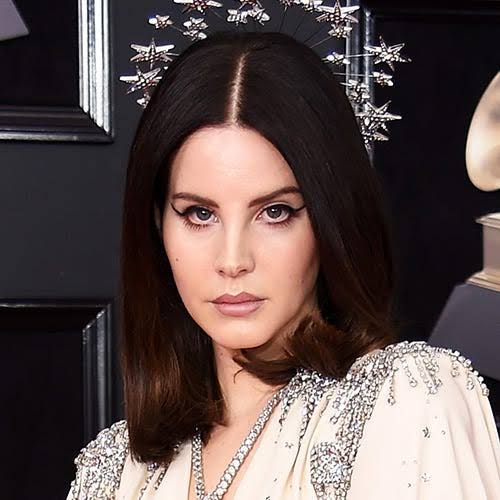

Lana Del Rey
- Lana Del Rey (Elizabeth): Su música se distingue por su calidad cinematográfica, su estilo retro y su exploración del romance trágico, el glamur y la melancolía. Con frecuentes referencias a la cultura pop contemporánea y a la época dorada de los años 1950 y 1960 en Estados Unidos.
- Lana Del Rey (album ): El álbum gira mucho alrededor de relaciones complicadas, deseo, dependencia emocional, soledad, nostalgia y una visión oscura del amor. La producción tiene guitarras, reverberación y un ambiente casi hipnótico, muy diferente al pop más accesible de Born to Die.